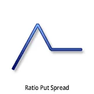
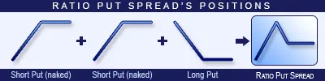
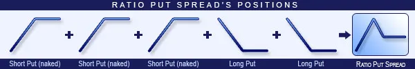
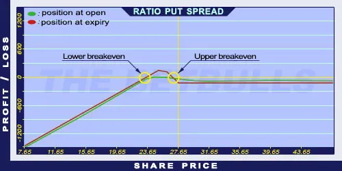

Description and use

Ratio Put Spread strategy is the opposite of Put Ratio Backspread. The difference is that in this strategy, the Short Puts have lower strikes. Consequently, loss is going to be unlimited and profit is going to be limited. Because of the unlimited risk, increasing volatility is harmful for the position. This strategy is not recommended. Stagnating share prices make the situation better. The strategy consists of Short and Long Put options with the same expiration, but different quantities. Typically, the ratio of the sold/purchased Put options is 2:1 or 3:2. The potential loss is unlimited. The direction of the market is neutral/decreasing. The trader speculates on low volatility shares with stagnating prices. The profit is maximised when the share closes at the lower breakeven point. The investment should be short-term, maximum one month.
- Type: Neutral, Bullish
- Transaction type: Debit
- Maximum profit: Limited
- Maximum loss: Limited
- Strategy: Ratio spread
Opening the Position

Ratio Put Spread Option Position 1
or

Ratio Put Spread Option Position 2
Sell two or three lower strike Put options. Buy one or two higher strike Put options. The ratio of purchased/sold options should be 1:2 or 2:3.
Steps
Entry:
- Make sure the trend is ascending.
Exit:
- When the share price is below the Stop Loss, close the positions.
- Close the positions at least one month before the expiry date.
Basic Characteristics
- Maximum loss: Higher strike price - (Difference between strike prices * Short Put quantity) + Net debit.
- Maximum profit: (Difference between strike prices * Long Put quantity) - net debit (or + net credit).
- Time decay: Time usually has a positive effect on the value.
- Lower breakeven point: Higher strike price + (Difference between strike prices * Short Put quantity) / (Short Put quantity - Long Put quantity) - Net Credit (or + Net debit).
- Upper breakeven point: Higher strike price - (Net debit * Long Put quantity).
Advantages and Disadvantages
Advantages:
- The investor can profit from share prices moving within given limits.
Disadvantages:
- The loss is unlimited if the share prices decrease.
- Moving share prices cause further risks.
- Complexity of the strategy.
Closing the Position
Buy back the Short options and sell the Long options.
Mitigation of Losses
Close the position the above-mentioned way.
Example

Ratio Put Spread strategy example
- ABCD is traded for $25.37 on 25.05.2017. The investor sells two Short Put options which have a strike price of $25.00, expire in June 2017. and cost $0.42 (premium). Then, buys a Long Put option which has a strike price of $27.50, expires in June 2017. and costs $1.33 (premium).
- Price of the underlying (share price): S= $27.65
- Premium (Short Puts): SP= $0.42
- Premium (Long Put): LP= $1.33
- Strike price (Short Puts): KS= $25.00
- Strike price (Long Put): KL= $27.50
- Net debit: ND
- Maximum loss: R
- Maximum profit: Pr
- Lower breakeven point: LBEP
- Upper breakeven point: UBEP
- Quantity (Long Put): nL= 1
- Quantity (Short Puts): nS= 2
- Net debit: ND = LP - 2 * SP
- Maximum loss (risk): R = KL - nS * (KL - KS) + ND
- Maximum profit: Pr = nL * (KL - KS) - ND
- Lower breakeven point: LBEP = KL - nS * (KL - KS) + ND
- Upper breakeven point: UBEP = KL - nL * ND
- ND = $0.49
- R = $22.99
- Pr = $2.01
- LBEP = $22.99
- UBEP = $27.01